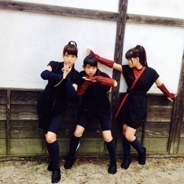

| 2013/11 08 Fri | 今、うしろに蛇。515 回目 |
月の大きさMV公開されました！
魔剣士まいやん率いる悪の軍団。

まいまい、みさ、川後、まりか
4人のくノ一。
名付けてくのいちーず！！
前髪の分け目がみーんな一緒だ！！
中でも私は手裏剣を
武器にしていました。
あの手裏剣は本物だそうです。
ひゃー！
コメントでは
くノ一は意外だった
町娘っぽいと書かれていましたが、
改めて、どうでしょう。
(くノ一似合うねって言ってほしい)
やっぱり着ると魔法のように
忍者を気取ってしまいます。
撮影では動きが
無駄に機敏になっていました。
しゅたっしゅたたたたっ
スタッ

という感じ。
楽しかった〜
撮影中、雨が降ってしまったけど
完成されたのを見たら
冒頭の雨がいい感じ...！
みんなかっこいいしかわいいし
素敵なミュージックビデオです！

↑一人はしゃぎすぎ
ブログのタイトルが曲の
タイトルに関係してるといま知った
▶︎バレッタと月の大きさは
公開されたけどヒントが
あったのわかったよね？
他のも公開されてから
タイトルをチェックしてみてね。
あー！これか！っていうのが
ある、かも、
先週の乃木どこ見たよーー
まりかは楽屋では何してるん⁇
まりかは楽屋では何してるん⁇
▶︎実はあの時体調不良でした。
撮られてるとも知らず
ソファで寝てたり
いつもより静かで...
あー元気な時に撮ってほしかったなー
みなさんにも楽屋での
元気な姿を見て欲しかった。
あ、クロワッサンは食べたよ

ちゃっかり
間違えた写真はなにしてるの？
▶︎美彩の目元をらりんと見てるの！
メイクの研究です！

お！
苔がついた石だ！わーい！
まりか
コメント(294)
2013/11/08 21:42